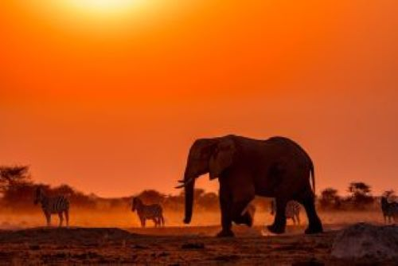

LE KENYA
Presentation
Le Kenya, situé en Afrique de l'Est, est un pays emblématique connu pour sa diversité géographique, sa faune sauvage époustouflante et sa riche culture. Au cœur du pays se dresse le majestueux Mont Kenya, le deuxième plus haut sommet d'Afrique, offrant des paysages montagneux spectaculaires et des possibilités d'escalade passionnantes pour les amateurs d'aventure. Les vastes plaines du Masai Mara abritent une incroyable diversité d'animaux sauvages, notamment des lions, des éléphants, des léopards et des guépards, faisant du Kenya l'une des principales destinations de safari au monde.
Une culture riche et variée à découvrir
La culture kényane est aussi riche que variée, avec plus de 40 groupes ethniques différents, chacun apportant sa propre musique, danse, artisanat et traditions culinaires uniques. Les Maasaï, célèbres pour leur mode de vie pastoral et leurs habillements distinctifs, sont l'un des groupes ethniques les plus reconnaissables du pays. Les festivals traditionnels tels que le Festival du Littoral de Lamu offrent aux visiteurs l'occasion de découvrir la musique, la danse et les coutumes locales dans un cadre festif et animé.
Un centre économique en pleine croissance
En plus de sa beauté naturelle et de sa culture vibrante, le Kenya est également un centre économique régional en pleine croissance. Sa capitale, Nairobi, est un pôle d'activité dynamique abritant des entreprises internationales, des institutions financières, des universités de renom et une scène artistique florissante. Le tourisme, l'agriculture et les technologies de l'information sont parmi les principaux moteurs de l'économie kényane, contribuant à son développement et à sa prospérité.